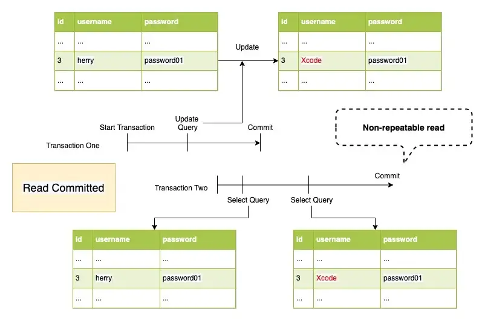
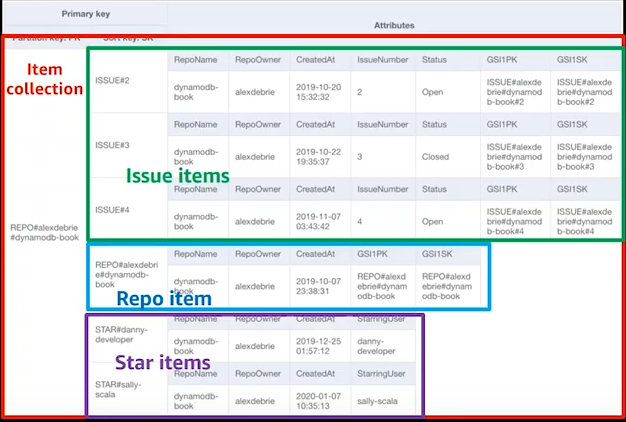

1.- Definir entidades: nombre y breve descripcion de cada una.
2.- Definir relaciones: incluyendo su cardinalidad minima y maxima.
* Cardinalidad minima:
0 - la entidad se relaciona de manera opcional. Su existencia NO depende de participar en la relacion.
1 - la entidad se relaciona de manera obligatorio. Su existencia SI depende de participar en la relacion.
Ej: Una actividad (fuerte) NO necesita documento pero un documento (debil) SI una actividad.
* Cardinalidad maxima:
1 - la ocurrencia puede relacionarse con solo una de la otra entidad.
n - la ocurrencia puede relacionarse con varias a la vez.
3.- Definir atributos: pueden ser simples o compuestos. Se debe especificar cuales son derivados (calculados a partir de otro).
4.- Realizar el diagrama correspondiente al diseño logico
* Si las entidades tienen PRIMARY KEY (PK) son llamadas "fuertes/padre" sino son llamadas "debiles/hijo".
* Cada ocurrencia de una entidad debil se relaciona con una y solamente una ocurrencia de la entidad fuerte de la que depende. por esto en la entidad debil se debe crear una FOREIGN KEY (FK) enlazada a la PK de la entidad fuerte.
- RELACIONES BINARIAS ENTRE ENTIDADES FUERTES: en este tipo de relaciones la tabla hija absorbe la relacion y se le asigna una FK.
Segun la cardinalidad maxima de los atributos relacionados esta puede ser:
* Uno a uno: la entidad hija es la que participa de manera oblogatoria, la que tiene cardinalidad minima 1.
* Uno a muchos: la entidad hija es la de cardinalidad maxima 1.
* Muchos a muchos: se crea una tabla intermedia para almacenar las ocurrencias de la relacion. Esta tabla contendra una FK a cada una de las tablas correspondientes a las entidades participantes, ademas de incluir los atributos de la relacion. Ninguna de las FK aceptara nulos. La PK de esta tabla seran las dos FK si la relacion no tiene atributos, o un atributo de la relacion que pueda ser PK.
En las relaciones "Uno a Uno" y "Uno a Muchos" tambien es posible usar una tabla intermedia, pero no es obligatorio como en el caso "Muchos a Muchos". Esto se puede hacer para tratar de favorecer los accesos mas frecuentes y/o que requieran un tiempo de respuesta menor.
5.- Normalizacion

Cardinalidad => (minima, maxima)
Relaciones:
actividades (0, *) <=> (1, 1) documentos
- Una 'act' PUEDE no tener 'doc' o tener muchos
- Un 'doc' DEBE estar asociado a una y solo una 'act'
actividades (1, *) <=> (1, 1) tareas
- Una 'act' DEBE estar asociada a una o mas 'tar'
- Una 'tar' DEBE estar asociada a una y solo una 'act'
grupos (0, *) <=> (1, 1) tareas
- Un 'gr' PUEDE no tener 'tar' o tener muchas
- Una 'tar' DEBE estar asociada a uno y solo un 'gr'
grupos (1, *) <=> (1, 1) personas
- Un 'gr' DEBE estar asociado a una o mas 'per'
- Una 'per' DEBE estar asociada a uno y solo un 'gr'
A polymorphic relationship allows the child model to belong to more than one type of model using a single association.
One to One:
A one-to-one polymorphic relation is similar to a typical one-to-one relation.
The
imageable_id column will contain the ID value of the post or user, while the imageable_type column will
contain the class name of the parent model. The imageable_type column is used by Eloquent to determine which "type" of
parent model to return when accessing the imageable relation.
One to Many:
A one-to-many polymorphic relation is similar to a typical one-to-many relation.
Using polymorphic relationships, you may use a single comments table to contain
comments for both posts and videos.
Many to Many:
Many-to-many polymorphic relations are slightly more complicated than "morph one" and "morph many" relationships.
A
Post model and Video model could share a polymorphic relation to a Tag model. Using a
many-to-many polymorphic relation in this situation would allow your application to have a single table of unique tags that may be
associated with posts or videos.
In this case, the table shared among the main (father) models corresponds to the intermediate table in a normal many-to-many
relationship. It means that you just need one intermediate table for all the models related to the
Tag model, because you
can identify the relation with the taggable_type field.
One to Many:
Many to Many:
- Default Transaction Isolation Level for Mysql is Read Committed
- The Transaction Isolation Level is set globally for the entire database
- Choosing the isolation level is about finding the right balance of consistency and scalability for our current application requirements
- There are Four Transaction Isolation Levels and Three Consistency Anomalies:
-
Isolation Levels
- READ UNCOMMITTED
- READ COMMITTED
- REPEATABLE READ
- SERIALIZABLE -
Anomalies:
- Dirty read
- Non-repeatable read
- Phantom read
- READ UNCOMMITED: In READ UNCOMMITTED isolation level, there isn’t much isolation present between the transactions at all, ie ., No locks. This isolation level allows dirty reads, which means one transaction may see uncommitted changes made by some other transaction. In our example, Transaction Two has seen the uncommitted data(changed username) by Transaction One.
- READ COMMITTED: IN READ-COMMITTED isolation level, the phenomenon of dirty read is avoided, however, this isolation level allows Non-repeatable read. Within the same transaction, the same retrieves should return the same data. However, Non-repeatable read returns different results because the data is changed by another transaction committing in the meantime.
- REPEATABLE READ: In REPEATABLE-READ isolation level, the phenomenon of non-repeatable read is avoided. It is the default isolation in MySQL. This isolation level allows phantom read. A Phantom read occurs when one user is repeating a read operation on the same records but has new records in the results set.
- SERIALIZABLE: This isolation level is the strongest possible isolation level. It completely isolates the effect of one transaction from others.
READ UNCOMMITED - Diagram
READ UNCOMMITED - Tables
READ COMMITED - Diagram
READ COMMITED - Tables 
REPEATABLE READ - Diagram
REPEATABLE READ - Tables
ALTER USER 'root'@'localhost' IDENTIFIED BY 'NEW_PASSWORD';
Cambiar clave del usuario con el que entro en la consola (root en este caso)
,TABLE_NAME AS 'TableName'
FROM INFORMATION_SCHEMA.COLUMNS
WHERE COLUMN_NAME LIKE '%country%'
ORDER BY TableName, ColumnName;
FROM INFORMATION_SCHEMA.KEY_COLUMN_USAGE
WHERE POSITION_IN_UNIQUE_CONSTRAINT IS NOT NULL
o
SHOW Tables;
o
Muestra una lista con los nombres de todas las tablas de la Base de Datos
Ejemplo:
ALTER TABLE products ADD service_type_id int NOT NULL;
ALTER TABLE products ADD CONSTRAINT products_service_types_fk FOREIGN KEY (service_type_id) REFERENCES service_types(id);
Al modificar una tabla se debe añadir la columna primero y luego agregar la restriccion
Antes se debe crear la base de datos vacia
['nombre_columna'] [tipo_dato] [constraint],
CONSTRAINT ['nombre_pk'] PRIMARY KEY ([columna1], [columna2]),
CONSTRAINT ['nombre_fk'] FOREIGN KEY ([columna1], [columna2])
REFERENCES ['nombre_tabla_ref'](['nombre_columna_ref'])
[MATCH FULL | MATCH PARTIAL]
ON UPDATE [accion] ON DELETE [accion]
)ENGINE=InnoDB;
CREATE TABLE codventa_resets (
id int AUTO_INCREMENT NOT NUll,
idventa int NOT NUll,
created_at timestamp DEFAULT CURRENT_TIMESTAMP,
CONSTRAINT codventa_reset_pk PRIMARY KEY (id),
CONSTRAINT ventas_fk FOREIGN KEY (idventa)
REFERENCES ventas(idventa)
ON UPDATE CASCADE ON DELETE CASCADE
)ENGINE=InnoDB;
- MATCH FULL: todas las columnas de la FOREIGN KEY tienen valor o ninguna de ellas lo tiene.
- MATCH PARTIAL: permite las FOREIGN KEY parcialmente nulas.
Se pueden establecer 4 comportamientos [accion] para cada FOREIGN KEY cuando se borra o actualiza el valor referenciado, es decir, el valor original en la PRIMARY KEY:
- NO ACTION o RESTRICT: produce un error, no permite borrar ni actualizar.
- CASCADE: borra/actualiza las filas que hacen referencia al valor borrado/actualizado.
- SET NULL: pone un nulo en las filas donde se hacia referencia al valor borrado/actualizado.
- SET DEFAULT: pone el valor por defecto en la filas donde se hacia referencia al valor borrado/actualizado.
ON [nombre_tabla] FOR EACH ROW [NEW_STATEMENT];
BEFORE ejecuta el trigger ANTES de la accion
AFTER ejecuta el trigger DEPUES de la accion
EVENT es la accion que realiza el trigger, puede ser UPDATE o DELETE o INSERT
NEW_STATEMENT es la query que ejecutara el trigger. Ej: INSERT INTO, UPDATE, etc.
En el NEW_STATEMENT se debe especificar si usar el valor previo o posterior al ACTION. Para ello se usan los prefijos "OLD." (valor previo) y "NEW." (valor posterior) en los nombres de los campos de la tabla de origen de los datos, ya que son los que se asignan como valores. EACH ROW o EACH STATEMENT (Averiguar que opciones hay)
UPDATE test
SET
info = tmp.info
field = tmp.field
FROM (
VALUES
(1, 'new1', 'field1'),
(2, 'new2', 'field2'),
(6, 'new6', 'field6')
) AS tmp (id, info, field)
WHERE test.id = tmp.id;
Use other's table name after 'FROM' to perform multi-table JOIN batch update.
In a scenario where a Cartesian or one-to-many or many-to-many JOIN operations occur, the database might not know the target row for which the value needs to be updated.
DELETE FROM test
USING (VALUES (3),(4),(5)) AS tmp(id)
WHERE test.id = tmp.id;
Use other's table name after 'FROM' to perform multi-table JOIN batch deletion.
If you want to clear the table, we recommend usig TRUNCATE.
In a scenario where a Cartesian or one-to-many or many-to-many JOIN operations occur, the database might not know the target row for which the value needs to be updated.
SELECT
"rt"."id",
"rt"."name",
"rt"."prefix",
"rt"."description",
"rt"."uses_resources",
"rt"."status",
"rt"."has_appointments",
"rt"."is_default",
CONCAT('[',
STRING_AGG(
CONCAT(
'{',
'"id": "', rtf.id, '",',
'"resource_type_id": "', rtf.resource_type_id, '",',
'"name": "', rtf.name, '",',
'"type": "', rtf.type, '",',
'"is_required": "', rtf.is_required, '",',
'"options": ', COALESCE(rtf.options, '{}'::jsonb), ',',
'"status": "', rtf.status, '",',
'"position": "', rtf.position, '",',
'"created_at": "', rtf.created_at, '",',
'"created_by": "', rtf.created_by, '",',
'"creator_id": "', rtf.creator_id, '"',
'}'
)
, ','),
']') AS fields
FROM resources_types rt
INNER JOIN resources_types_fields rtf ON rt.id = rtf.resource_type_id
WHERE rt.id = $1
GROUP BY rt.id
sudo -i -u postgres
El [comando] es opcional.
Presiona "q" para salir de la ayuda.
El [comando] es opcional.
Presiona "q" para salir de la ayuda.
Con la ayuda FUERA de la conexion a la consola se puede ver como setear las opciones de la conexion.
Con el [nombre_tabla] describe la tabla especificada.
La base de datos debe estar creada (vacia) es psql para que esto funcione
El archivo de output debe ser .sql
Debes estar logueado con el superusuario postgres. (sudo su - postgres)
psql -f /var/lib/pgsql/backups/dumpall.sql [database_name]
Para el segundo comando debes estar logueado con el superusuario postgres. (sudo su - postgres)
- noSQL tiene un diseño desnormalizado (se puede duplicar data) y “query-first” (las queries son mas relevantes que las relaciones). Esto significa que se define el esquema segun los patrones de acceso a los datos y queries. Como ayuda en el proceso de diseño se recomienda listar todos los casos de acceso a los datos que requiera tu apicacion y tratar de soportarlos todos con tu diseño, en lugar de un diagrama entidad-relacion como se haria con una DB relacional.
- "query-first" se refleja en la practica cuando logras realizar (casi) todas las queries solo filtrando por la primary, sea simple o compuesta.
- El diseño desnormalizado es posible porque noSQL esta diseñado para escalar horizontalmente. Al dividir la informacion en modulos o particiones permite que al hacer una query la DB lea un listado con los rangos de datos en cada particion y asi puede elegir en cual particion buscar.
- Es util comenzar por definir entidades, atributos y relaciones. Siempre que sea util, se pueden seguir las normas de SQL para identificar las entidades debiles.
- Es importante recordar, los datos que se leen juntos se deben almacenar juntos. Por ejemplo:
* Una web de post tiene las entidades 'Users', 'Posts' y 'Comments'.
* En SQL, 'Comments' se relacionaria con las otras dos entidades.
* En noSQL se debe decidir con cual agruparla. Para este caso se privilegia el acceso a los 'Posts', por lo que 'Comments' quedaria como su embedded object.
- Si un embedded object es demasiado grande (el tamaño optimo es entre 50-100KB). Puede solo agregarse su row key y almacenarlo en su propia tabla.
- En MongoDB para cada documento se designa un id (row key). Se pueden crear “composite” row key con varios campos, esto puede ser util para (indexar) agrupar filas. En el siguiente ejemplo, la key es compuesta por la categoria y el timestamp.
- En DynamoDB las primary keys son llamadas partition key (deben ser unicas). Dynamo tambien soporta keys compuestas formadas por un partition key y un sort key (obviamente usada para ordenar/agrupar registros)
RELATIONAL TO DOCUMENT MODEL EXAMPLE

MAPR Documentation - ROW KEY RELEVANCE

- Denormalization + complex attribute: de esta forma se puede incluir toda la informacion de los hijos junto con el padre. Este metodo es recomendado cuando:
- Nunca es necesario acceder al hijo por separado. Es decir, no se requiere en base a un numero de tarjeta (PaymentMethod) acceder al usuario
- El objeto hijo (iems relacionados al padre) son pocos. Dynamo tiene un tamaño por cada registro (item size) de 400kb
- Denormalization + duplication: el principal inconveniente con este metodo es que en caso de tener que modificar la informacion duplicada se debe hacer en muchos registros, por lo que se recomeinda usar cuando:
- Los datos que se duplican son inmutable. Como en el ejemplo, es una fecha de nacimiento
- Los datos se duplican en pocos sitios y cambian con poca frecuencia
- Composite primary key + query: se hace un "pre-join", es decir, se modelan los datos en base al patron con el que se va a acceder a ellos y asi se hace innecesario el uso de joins
Denormalization + duplication
Composite primary key + query (pre-join) 
- Se define una nomenclatura para la PK y SK que permita cierta flexibilidad en base al tipo de datos que se quieren almacenar. En este caso se almacenan organizaciones y sus usuarios. Es recomendable usar upper case para las keys (sobretodo la sort key) porque en utf las mayusculas siempre van alfabeticamente antes que las minusculas.
- Con este dinseño se cumple el ideal de poder realizar queries solo en base a la primary key (compuesta en este caso). El sort key es unico entre todos los registros de una misma organizacion (misma PK).
- Dynamo es schemaless, los registros no tienen una estructura predefinida. En el diseño de la DB solo se deben cuidar el acceso a los datos, no la estructura de cada registro
- Un secondary index puede ser asociado con solo una tabla (base table).
- Al crear un secondary index debes seleccionar la "alternate key" (partition key and sort key) y definir los atributos que quieres copiar al secondary index.
Existen dos tipos de secondary index:
-
Global:
- Puede tener una partition key simple o compuesta y ademas su partition key no debe coincidir con la de la tabla base, por eso es considerada "global" porque sus datos pueden pertenecer a varias particiones de la tabla base a la vez. Este tipo de secondary index son almacenados en su propia particion y escala independiente de la tabla base.
- Pueden ser creados al crear su tabla base, luego de creada la tabla tambien se pueden agregar o eliminar.
- Consume capacity units del propio secondary index, no de su base table.
- En las queries al secondary index solo se pueden incluir atributos copiados (o preojectados) al secondary index.
-
Local:
- Debe tener la misma partition key que su tabla base pero una sort key diferente, por eso se considera "local" porque sus datos estan restringidos a una particion de su tabla base.
- Solo pueden ser creados al momento de crear su tabla base y no pueden ser eliminados mientras exista su tabla base.
- Consume capacity units de su base table.
- En las queries al secondary index se pueden incluir atributos presentes en su base table que no se hayan incluido en el secondary index.
Global secondary index
Se quiere dar soporte a un patron de acceso por Role de usuario, por ejemplo: Todos los usuarios con Role = Admin
Local secondary index
Mismo patron de acceso del global secondary index pero en este caso con local secondary index
status: Muestra informacion sobre el estado actual del servidor.
stop: Detiene el servidor.
restart: Reinicia el servidor.
user: nombre del nuevo usuario.
pwd: contraseña del nuevo usuario.
customData (opcional): informacion arbitraria que se desee agregar.
roles: los roles (permisos) que tendra el usuario. Pueden ser uno o varios de estos:
authenticationRestrictions (opcional): una lista IPs desde los cuales el usuario tiene permitido concetarse a la base de datos.
Tambien se pueden insertar varios a la vez con un array de objetos
Creo que si la coleccion especificada no existe la crea.
Para acceder a objetos dentro de objetos se coloca la key como si se accediera desde JavaScript con dot notation.
Por ejemplo: "address.city": "London" Si no se colocan argumentos devuelve todos los registros de la coleccion
Los argumentos (criterio de busqueda) se colocan como key:value.
Modificadores (opcionales):
$or: [{}] permite colocar un array de objetos para especificar varios values (criterios) para un mismo key.
key: {$gt: [numero]} greater than, permite buscar con un mayor que.
key: {$lt: [numero]} less than, permite buscar con un menor que.
key: {$regex: [regex]} permite buscar con Regular Expressions.
-Primero: El criterio de seleccion de los datos, igual como se pondria en el metodo find().
-Segundo: El nuevo registro. Sobreescribe el objeto actual.
Modificadores dentro del segundo argumento:
La key $set permite modificar solo las propiedades que contenga el objeto que se le pasa como value.
La key $unset permite eliminar solo las propiedades que contenga el objeto que se le pasa como value. El value del objeto que recibe $unset es boolean y se especifica con 1 o 0.
La key $rename permite modificar el nombre de la key especificada. Recibe un objeto donde la key es la key actual (que se desea modificar) y el value es el nuevo nombre que se quiere dar a la key.
$inc: { key: [numero] } incrementa el value de la key especificada en base al [numero].
$dec: { key: [numero] } decrementa el value de la key especificada en base al [numero].
-Tercero (opcional): permite crear un nuevo dato en caso de que el que se intenta actualizar no exista.
Por lo general se concatena al final de la query.